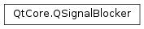

QSignalBlocker¶
Detailed Description¶
Exception-safe wrapper around
QObject.blockSignals()
PySide2.QtCore.QSignalBlockercan be used wherever you would otherwise use a pair of calls to blockSignals(). It blocks signals in its constructor and in the destructor it resets the state to what it was before the constructor ran.{ const QSignalBlocker blocker(someQObject); // no signals here }is thus equivalent to
const bool wasBlocked = someQObject->blockSignals(true); // no signals here someQObject->blockSignals(wasBlocked);except the code using
PySide2.QtCore.QSignalBlockeris safe in the face of exceptions.See also
PySide2.QtCore.QMutexLockerQEventLoopLocker
-
class
PySide2.QtCore.QSignalBlocker(o)¶ -
class
PySide2.QtCore.QSignalBlocker(o) Parameters: o – PySide2.QtCore.QObjectThis is an overloaded function.
Calls
object.blockSignals(true).Constructor. Calls
object->blockSignals(true).
-
PySide2.QtCore.QSignalBlocker.reblock()¶ Re-blocks signals after a previous
PySide2.QtCore.QSignalBlocker.unblock().The numbers of and
PySide2.QtCore.QSignalBlocker.unblock()calls are not counted, so every undoes any number ofPySide2.QtCore.QSignalBlocker.unblock()calls.
-
PySide2.QtCore.QSignalBlocker.unblock()¶ Temporarily restores the
QObject.signalsBlocked()state to what it was before this QSignaBlocker’s constructor ran. To undo, usePySide2.QtCore.QSignalBlocker.reblock().The numbers of
PySide2.QtCore.QSignalBlocker.reblock()and calls are not counted, so every undoes any number ofPySide2.QtCore.QSignalBlocker.reblock()calls.
© 2018 The Qt Company Ltd. Documentation contributions included herein are the copyrights of their respective owners. The documentation provided herein is licensed under the terms of the GNU Free Documentation License version 1.3 as published by the Free Software Foundation. Qt and respective logos are trademarks of The Qt Company Ltd. in Finland and/or other countries worldwide. All other trademarks are property of their respective owners.